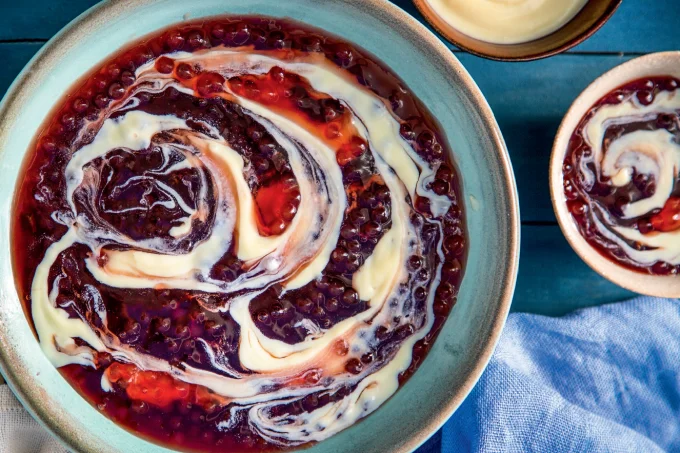

Ir para livro de receitas
Sagu Com Vinho Tinto

Ingredientes:
- 2 xícaras de sagu
- 4 xícaras de vinho tinto
- 1 xícara de açúcar
- 1 canela em pau
- 1 colher (sopa) de cravo-da-índia (ou cravinho)
- 1 lata de leite condensado (395 gramas) - para o creme de baunilha
- 1 lata de leite (use a lata de leite condensado como referência) - para o creme de baunilha
- 4 gema de ovo peneiradas - para o creme de baunilha
- 2 colheres (chá) de essência de baunilha - para o creme de baunilha
- 1 xícara de creme de leite - para o creme de baunilha
Modo de preparo
- Em uma vasilha, deixe o sagu de molho por meia hora.
- Escorra.
- Transfira para uma panela com 3 litros de água fervente.
- Cozinhe, em fogo médio, por meia hora, mexendo sempre para não grudar no fundo do utensílio.
- Desligue o fogo, tampe a panela e reserve por uma hora.
- Em uma peneira, passe o sagu em água corrente, mexendo, para separar as bolinhas da “gosma” branca que se formou.
- Repita esse processo três vezes.
- Ao final, as bolinhas devem ficar soltinhas.
- Transfira-as para uma panela com o vinho tinto.
- Adicione o açúcar, a canela e o cravo e deixe ferver por dez minutos, mexendo de vez em quando.
- Leve à geladeira em um recipiente de servir, coberto com filme plástico, por pelo menos duas horas.
Prepare o creme de baunilha:
- Em uma panela, em fogo médio, junte todos os ingredientes e cozinhe, mexendo sempre, até formar um creme espesso.
- Sirva o sagu gelado com o creme à parte ou misturado levemente por cima.
Fonte:
Visite a receita direto da fonte.